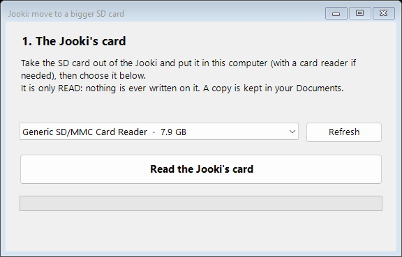

A bigger SD card
Out of room for music? Move your Jooki to a bigger card with a Windows computer. One file, nothing to install.

The window, in English or French like your Windows.
Download the toolWindows 10 or 11 · a card reader · about 8 GB free in Documents
How it goes
- Take the SD card out of the Jooki and put it in the computer.
- Double-click the file and say Yes when Windows asks for permission.
- The tool reads the Jooki's card, then asks for the new one: it copies everything, checks every byte, and gives the music all the space of the new card.
- Put the new card in the Jooki: at the first start it uses all the space by itself.
Nothing to lose
- The Jooki's card is only read, never written: keep it, it is your way back.
- A copy of it is kept in your Documents.
- Only card readers are offered, never your computer's disks, and the new card is confirmed by name and size before it is erased.
New tool: checked on disk images, including the real layout of a Jooki's card stretched to 32 GB. Cards up to 32 GB are the same kind as the Jooki's own; bigger ones have not been tried in a Jooki yet. How it works: tools/sdcard.